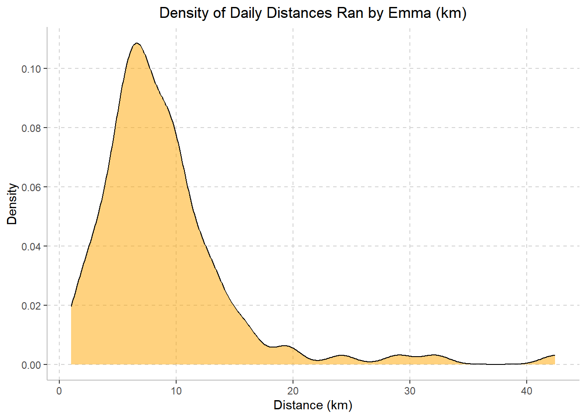
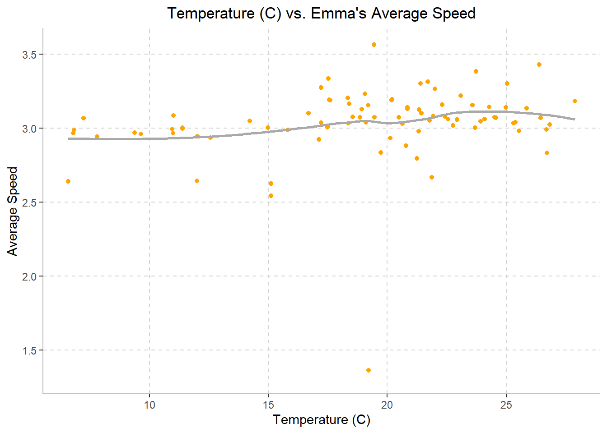
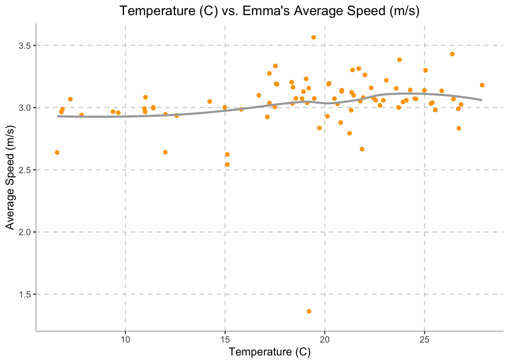
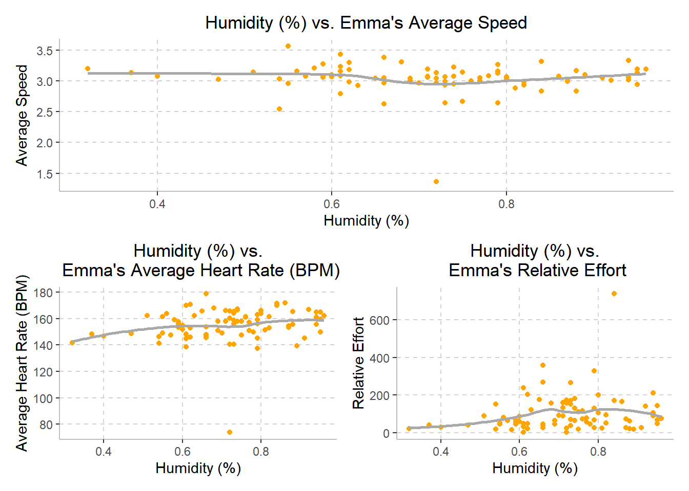
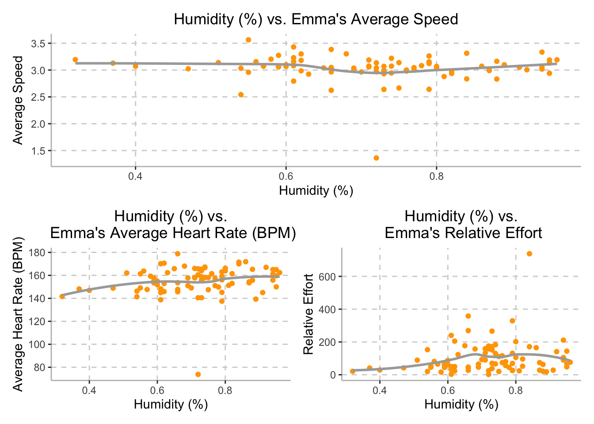
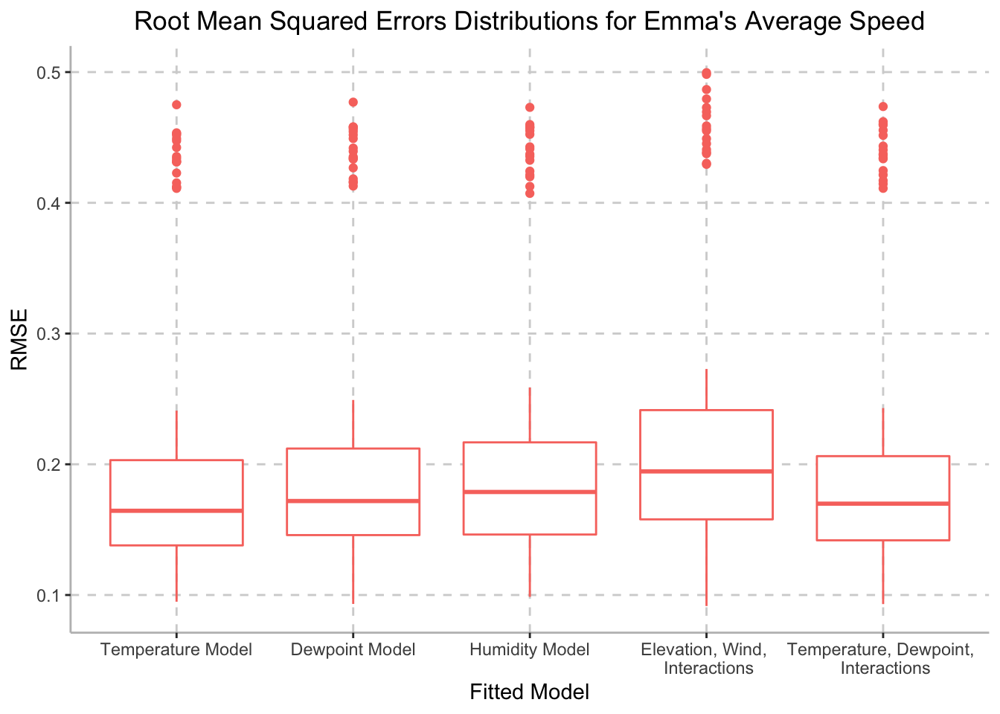
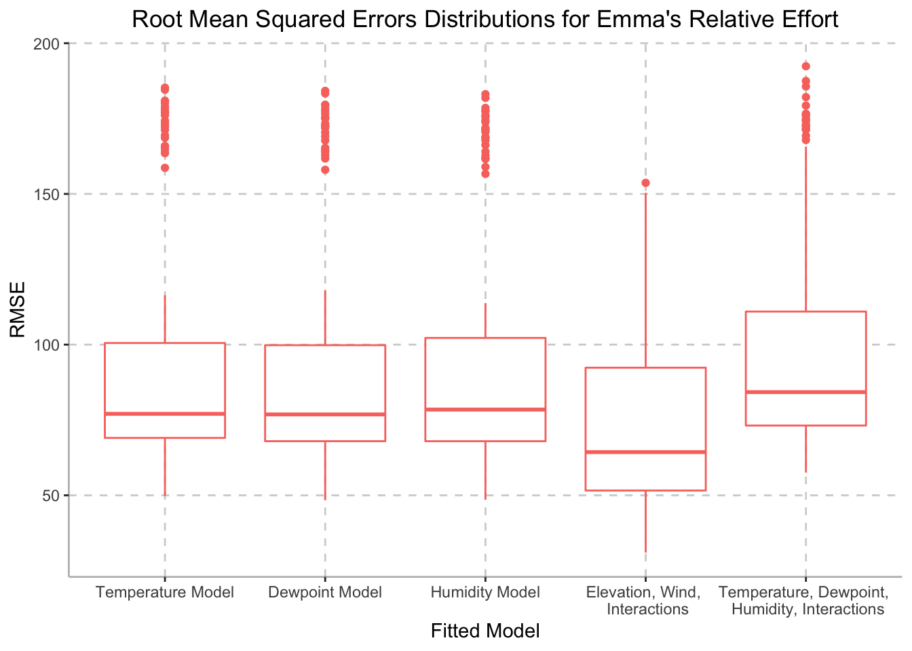

Running a marathon requires an immense amount of time, effort, and dedication. First-time marathon runners are forced to make decisions with little knowledge of what to expect. Being ill-prepared and over-training are two common experiences that occur during training and on race day. Emma, one of our group members, ran the New York City Marathon (NYCM) this past fall, which was her first marathon. After completing the marathon on November 6th, Emma was prepared to start training for the next one. Therefore, we are interested in understanding the impact of external factors, such as temperature, wind, elevation, etc., on Emma’s speed and performance during the marathon, while also considering how training changed over time in order to improve her training for the next marathon.
For the purposes of this project, we will be answering the following questions:
In preparation for data analysis, we will load the following libraries:
library(tidyverse)
library(FITfileR)
library(dplyr)
library(patchwork)
library(leaflet)
library(modelr)Data was collected using the Garmin Forerunner 245 activity watch
from July 23, 2020 to November 6, 2022. Collected data was uploaded to
Strava.com after each activity. After granting permission, personal data
was downloaded from Strava.com. Summary data for each activity post was
saved in the form of a .csv file (imported using
tidyverse) and per-second data for each activity was
compiled and saved in a .fit file (imported using
FITfileR).
First, we imported the summary-level data of all of Emma’s training
runs from July 23, 2020 to November 6, 2022 using the
read_csv function.
training_raw <- read_csv("activities/activities.csv") %>%
janitor::clean_names()The raw data contains blah blah
After importing, the data frame was then cleaned to include activities from the start of marathon training (April 4, 2022) to the day of the New York City Marathon (November 6, 2022). The data was filtered to only include observations from ‘activity_type’ that were classified as ‘Run’. From this, the following 22 variables were selected to be included in this data set: activity_id, activity_date, activity_name, activity_description, elapsed_time_6, distance_7, max_heart_rate_8, relative_effort_9, max_speed, average_speed, elevation_gain, elevation_loss, max_grade, average_grade, max_cadence, average_cadence, average_heart_rate, calories, weather_temperature, dewpoint, humidity,and wind_speed.
Due to Emma’s marathon training beginning April 4th, 2022, the ‘activity_id’ was used in order to filter any training prior to this. Following this, the variable ‘activity_date’ was separated into two variables:the date on which the run occurred (‘date’) as well as the time when the run began (‘time’). The ‘elapsed_time_6’ variable was converted from seconds to minutes (‘elapsed_time_min’). In addition to this, the variables names for distance_7, max_heart_rate_8, and relative_effort_9 were changed to distance_km, max_heart_rate, and relative_effort.
A new data frame, ‘activities_summaries’ was created in order to include the written accounts from each of Emma’s runs, including variables ‘activity_name’ and ‘activity_description’.
training_summary =
training_raw %>%
filter(activity_type == "Run") %>%
select(activity_id, activity_date, activity_name, activity_description, elapsed_time_6, distance_7, max_heart_rate_8, relative_effort_9, max_speed, average_speed, elevation_gain, elevation_loss, max_grade, average_grade, max_cadence, average_cadence, average_heart_rate, calories, weather_temperature, dewpoint, humidity, wind_speed) %>%
filter(activity_id >= 6910869137) %>%
separate(activity_date, c("month_date", "year", "time"), sep = ", ") %>%
mutate(
date = str_c(month_date, year, sep = " "),
date = as.Date(date, format = "%b%d%Y")
) %>%
select(-month_date, -year) %>%
mutate(
elapsed_time_min = elapsed_time_6 / 60,
distance_km = distance_7,
max_heart_rate = max_heart_rate_8,
relative_effort = relative_effort_9
) %>%
select(-elapsed_time_6, -distance_7, -max_heart_rate_8, -relative_effort_9)
activity_summaries =
training_summary %>%
select(activity_id, date, time, activity_name, activity_description)
tidy_training =
training_summary %>%
select(-activity_name, -activity_description) %>%
select(activity_id, date, time, distance_km, elapsed_time_min, max_speed, average_speed, max_heart_rate, average_heart_rate, relative_effort, everything()) %>%
filter(date != "2022-03-31",
date != "2022-04-03")The final cleaned data set, ‘tidy_training’, included 108 observations and 21 variables. The tidied dataset contains the following variables and associated characteristics:
activity_id: Unique activity identifierdate: Date of activity (YYYY-MM-DD)time: Time of activitydistance_km: Distance ran in km, mean = NA, rangeelapsed_time_min: Time spent running in minutes, mean =
NAmax_speed: Maximum running pace minutes/km, mean =
NAaverage_speed:max_heart_rate:average_heart_rate:relative_effort:elevation_gain:elevation_loss:max_grade:average_grade:max_cadence:average_cadence:calories:weather_temperature:dewpoint:humidity:wind_speed:Side note: Rest days are not in strava data - create data set with all dates. we make a variable that is yes/no for rest days.
tidy_training = tidy_training %>%
mutate(week = as.numeric(strftime(date, format = "%V")) - 13) %>%
group_by(week) %>%
mutate(weekly_distance_km = sum(distance_km))
tidy_training %>%
ggplot(aes(x = week, y = weekly_distance_km)) +
geom_point(color = c("#FFA500")) +
geom_line(color = c("#FFA500")) +
labs(
title = "Weekly Distance Ran by Emma (km)",
x = "Week",
y = "Distance (km)") +
scale_x_continuous(breaks = scales::pretty_breaks(n = 5)) +
scale_y_continuous(breaks = scales::pretty_breaks(n = 5)) +
theme(axis.line = element_line(color = "grey"),
panel.background = element_blank(),
legend.position = "none",
panel.grid.major = element_line(color = "light grey", linetype = "dashed"),
plot.title = element_text(hjust = 0.5))
Emma’s mileage overtime gradually increased throughout her training period, peaking at Week 20 where she ran 70.28 km over the course of the week. Weeks 21-25 demonstrate a steep drop in weekly mileage. This was due to Emma’s illnesses and injuries, making her unable to run. The plot above demonstrates Emma’s ramp up in training mileage in preparation for the NYCM.
tidy_training %>%
ggplot(aes(x = distance_km), color = c("#FFA500")) +
geom_density(alpha = 0.5, fill = c("#FFA500")) +
labs(
title = "Density of Daily Distances Ran by Emma (km)",
x = "Distance (km)",
y = "Density") +
scale_x_continuous(breaks = scales::pretty_breaks(n = 5)) +
scale_y_continuous(breaks = scales::pretty_breaks(n = 5)) +
theme(axis.line = element_line(color = "grey"),
panel.background = element_blank(),
legend.position = "none",
panel.grid.major = element_line(color = "light grey", linetype = "dashed"),
plot.title = element_text(hjust = 0.5))
The density plot above illustrates the mileage at which Emma run’s most often during her training period. The plot peaks at a distance of approximately 7km, indicating that 7km is the length of most of Emma’s runs during heer training period.
tidy_training %>%
ggplot(aes(x = weather_temperature, y = average_speed)) +
geom_point(color = c("#FFA500")) +
geom_smooth(se = FALSE, color = "dark grey") +
labs(
title = "Temperature (C) vs. Emma's Average Speed",
x = "Temperature (C)",
y = "Average Speed") +
scale_x_continuous(breaks = scales::pretty_breaks(n = 5)) +
scale_y_continuous(breaks = scales::pretty_breaks(n = 5)) +
theme(axis.line = element_line(color = "grey"),
panel.background = element_blank(),
legend.position = "none",
panel.grid.major = element_line(color = "light grey", linetype = "dashed"),
plot.title = element_text(hjust = 0.5))
Although we expected Emma’s speed to be inversely proportional to the weather temperature, Emma’s average speed stayed approximately steady throughout the training period, with a speed of 3 meters per second (10.8 km per hour), while temperature varied between 6.58 degrees Celsius and 27.89 degrees Celsius.
temp_avg_speed =
tidy_training %>%
ggplot(aes(x = weather_temperature, y = average_speed)) +
geom_point(color = c("#FFA500")) +
geom_smooth(se = FALSE, color = "dark grey") +
labs(
x = "Temperature (C)",
y = "Average Speed") +
scale_x_continuous(breaks = scales::pretty_breaks(n = 5)) +
scale_y_continuous(breaks = scales::pretty_breaks(n = 5)) +
theme(axis.line = element_line(color = "grey"),
panel.background = element_blank(),
legend.position = "none",
panel.grid.major = element_line(color = "light grey", linetype = "dashed"),
plot.title = element_text(hjust = 0.5)) +
ggtitle("Temperature (C) vs. Emma's Average Speed")
temp_avg_hrt =
tidy_training %>%
ggplot(aes(x = weather_temperature, y = average_heart_rate)) +
geom_point(color = c("#FFA500")) +
geom_smooth(se = FALSE, color = "dark grey") +
labs(
x = "Temperature (C)",
y = "Average Heart Rate (BPM)") +
scale_x_continuous(breaks = scales::pretty_breaks(n = 5)) +
scale_y_continuous(breaks = scales::pretty_breaks(n = 5)) +
theme(axis.line = element_line(color = "grey"),
panel.background = element_blank(),
legend.position = "none",
panel.grid.major = element_line(color = "light grey", linetype = "dashed"),
plot.title = element_text(hjust = 0.5)) +
ggtitle("Temperature (C) vs.\n Emma's Average Heart Rate (BPM)")
temp_rel_effort =
tidy_training %>%
ggplot(aes(x = weather_temperature, y = relative_effort)) +
geom_point(color = c("#FFA500")) +
geom_smooth(se = FALSE, color = "dark grey") +
labs(
x = "Temperature (C)",
y = "Relative Effort") +
scale_x_continuous(breaks = scales::pretty_breaks(n = 5)) +
scale_y_continuous(breaks = scales::pretty_breaks(n = 5)) +
theme(axis.line = element_line(color = "grey"),
panel.background = element_blank(),
legend.position = "none",
panel.grid.major = element_line(color = "light grey", linetype = "dashed"),
plot.title = element_text(hjust = 0.5)) +
ggtitle("Temperature (C) vs.\n Emma's Relative Effort")
temp_avg_speed /
(temp_avg_hrt | temp_rel_effort)
Although we expected Emma’s speed to be inversely proportional to the weather temperature, Emma’s average speed stayed approximately steady throughout the training period, with a speed of 3 meters per second (10.8 km per hour), while temperature varied between 6.58 degrees Celsius and 27.89 degrees Celsius, as demonstrated in the top plot above.
Additionally, although we hypothesized that external temperature would be inversely related to Emma’s average heart rate, the plot on the bottom left demonstrates the relationship between external temperature and Emma’s average heart rate. While temperature varied between 6.58 degrees Celsius and 27.89 degrees Celsius, Emma’s heart rate averaged around 155.
Finally, although we hypothesized that external temperature would be inversely related to Emma’s relative effort, the plot on the bottom right demonstrates the relationship between external temperature and Emma’s relative effort during her training period. The variable relative effort is calculated by Strava and based off of her heart rate during the training session. The plot demonstrates that while temperature varied between 6.58 degrees Celsius and 27.89 degrees Celsius, Emma’s relative effort averaged around 150.
humid_avg_speed =
tidy_training %>%
ggplot(aes(x = humidity, y = average_speed)) +
geom_point(color = c("#FFA500")) +
geom_smooth(se = FALSE, color = "dark grey") +
labs(
x = "Humidity (%)",
y = "Average Speed") +
scale_x_continuous(breaks = scales::pretty_breaks(n = 5)) +
scale_y_continuous(breaks = scales::pretty_breaks(n = 5)) +
theme(axis.line = element_line(color = "grey"),
panel.background = element_blank(),
legend.position = "none",
panel.grid.major = element_line(color = "light grey", linetype = "dashed"),
plot.title = element_text(hjust = 0.5)) +
ggtitle("Humidity (%) vs. Emma's Average Speed")
humid_avg_hrt =
tidy_training %>%
ggplot(aes(x = humidity, y = average_heart_rate)) +
geom_point(color = c("#FFA500")) +
geom_smooth(se = FALSE, color = "dark grey") +
labs(
x = "Humidity (%)",
y = "Average Heart Rate (BPM)") +
scale_x_continuous(breaks = scales::pretty_breaks(n = 5)) +
scale_y_continuous(breaks = scales::pretty_breaks(n = 5)) +
theme(axis.line = element_line(color = "grey"),
panel.background = element_blank(),
legend.position = "none",
panel.grid.major = element_line(color = "light grey", linetype = "dashed"),
plot.title = element_text(hjust = 0.5)) +
ggtitle("Humidity (%) vs.\n Emma's Average Heart Rate (BPM)")
humid_rel_effort =
tidy_training %>%
ggplot(aes(x = humidity, y = relative_effort)) +
geom_point(color = c("#FFA500")) +
geom_smooth(se = FALSE, color = "dark grey") +
labs(
x = "Humidity (%)",
y = "Relative Effort") +
scale_x_continuous(breaks = scales::pretty_breaks(n = 5)) +
scale_y_continuous(breaks = scales::pretty_breaks(n = 5)) +
theme(axis.line = element_line(color = "grey"),
panel.background = element_blank(),
legend.position = "none",
panel.grid.major = element_line(color = "light grey", linetype = "dashed"),
plot.title = element_text(hjust = 0.5)) +
ggtitle("Humidity (%) vs.\n Emma's Relative Effort")
humid_avg_speed /
(humid_avg_hrt | humid_rel_effort)
Although we expected Emma’s speed to be inversely related to the external humidity, Emma’s average speed stayed approximately steady throughout the training period, with a speed of 3 meters per second (10.8 km per hour), while humidity varied between between 32% and 96%, as demonstrated in the top plot above.
Additionally, although we hypothesized that external humidity would be inversely related to Emma’s average heart rate, the plot on the bottom left demonstrates the relationship between external humidity and Emma’s average heart rate. While humidity varied between 32% and 96%, Emma’s heart rate averaged around 155.
Finally, although we hypothesized that external humidity would be inversely related to Emma’s relatie effort, the plot on the bottom right demonstrates the relationship between external humidity and Emma’s relative effort during her training period. The variable relative effort is calculated by Strava and based off of her heart rate during the training session. The plot demonstrates that while humidity varied between 32% and 96%, Emma’s relative effort averaged around 150.
NOTE: Install Leaflet Prior to Running
Loading and Cleaning the Data
marathon_day <- read_csv("activities/marathon_day.csv")
marathon_day =
marathon_day %>%
mutate(
distance_m = distance*0.000621371
) %>%
mutate(group = case_when(
between(distance_m, 0,0.9999) ~ "Start",
between(distance_m, 1, 1.9999) ~ "1",
between(distance_m, 2, 2.9999) ~ "2",
between(distance_m, 3, 3.9999) ~ "3",
between(distance_m, 4, 4.9999) ~ "4",
between(distance_m, 5, 5.9999) ~ "5",
between(distance_m, 6, 6.9999) ~ "6",
between(distance_m, 7, 7.9999) ~ "7",
between(distance_m, 8, 8.9999) ~ "8",
between(distance_m, 9, 9.9999) ~ "9",
between(distance_m, 10, 10.9999) ~ "10",
between(distance_m, 11, 11.9999) ~ "11",
between(distance_m, 12, 12.9999) ~ "12",
between(distance_m, 13, 13.9999) ~ "13",
between(distance_m, 14, 14.9999) ~ "14",
between(distance_m, 15, 15.9999) ~ "15",
between(distance_m, 16, 2.9999) ~ "16",
between(distance_m, 17, 17.9999) ~ "17",
between(distance_m, 18, 18.9999) ~ "18",
between(distance_m, 19, 19.9999) ~ "19",
between(distance_m, 20, 20.9999) ~ "20",
between(distance_m, 21, 21.9999) ~ "21",
between(distance_m, 22, 22.9999) ~ "22",
between(distance_m, 23, 23.9999) ~ "23",
between(distance_m, 24, 24.9999) ~ "24",
between(distance_m, 25, 25.9999) ~ "25",
between(distance_m, 26, 26.9999) ~ "26-Finish")) Recode
marathon_geo =
marathon_day %>%
mutate(
latitude = position_lat,
longitude = position_long) %>%
select(-position_lat, -position_long)marathon_speed =
marathon_geo %>%
group_by(group) %>%
mutate(
speed_km =
enhanced_speed*2.237)Aggregate Data
agg = aggregate(marathon_speed,
by = list(marathon_geo$group),
FUN = mean)Aggregate Leaflet Plot
leaflet() %>%
addTiles() %>%
addCircleMarkers(data = agg,
lng = ~longitude,
lat = ~latitude,
label = ~Group.1,
radius = 7,
color = "orange",
stroke = TRUE, fillOpacity = 0.75,
popup = ~paste("Mile:", Group.1,
"<br>Speed:", speed_km,
"<br>HR:", heart_rate,
"<br>Cadence:", cadence,
"<br>Altitude:", enhanced_altitude)) %>%
addProviderTiles(providers$CartoDB.Positron)The leaflet plot above demonstrates Emma’s NYCM racing path. Each marker indicates the mile number and average speed (meters/sec), heart rate, cadence, and altitude for that mile. As a note, Strava failed to record information for Mile 3, and is therefore not included in the leaflet above.
fit1 = lm(average_speed ~ weather_temperature, data = tidy_training)
fit2 = lm(average_speed ~ dewpoint, data = tidy_training)
fit3 = lm(average_speed ~ humidity, data = tidy_training)
fit4 = lm(average_speed ~ (elevation_gain + wind_speed)^3, data = tidy_training)
fit5 = lm(average_speed ~ (weather_temperature + dewpoint)^3, data = tidy_training)cv_df =
crossv_mc(tidy_training, 100)
cv_df = cv_df %>%
mutate(
mod1 = map(.x = train, ~lm(average_speed ~ weather_temperature, data = .x)),
mod2 = map(.x = train, ~lm(average_speed ~ dewpoint, data = .x)),
mod3 = map(.x = train, ~lm(average_speed ~ humidity, data = .x)),
mod4 = map(.x = train, ~lm(average_speed ~ (elevation_gain + wind_speed)^3, data = .x)),
mod5 = map(.x = train, ~lm(average_speed ~ (weather_temperature + dewpoint)^3, data = .x))) %>%
mutate(
rmse_mod1 = map2_dbl(.x = mod1, .y = test, ~rmse(model = .x, data = .y)),
rmse_mod2 = map2_dbl(.x = mod2, .y = test, ~rmse(model = .x, data = .y)),
rmse_mod3 = map2_dbl(.x = mod3, .y = test, ~rmse(model = .x, data = .y)),
rmse_mod4 = map2_dbl(.x = mod4, .y = test, ~rmse(model = .x, data = .y)),
rmse_mod5 = map2_dbl(.x = mod5, .y = test, ~rmse(model = .x, data = .y)))
cv_df %>%
select(starts_with("rmse")) %>%
pivot_longer(
everything(),
names_to = "model",
values_to = "rmse",
names_prefix = "rmse_") %>%
ggplot(aes(x = model, y = rmse, color = c("#FFA500"))) +
geom_boxplot() +
labs(
title = "Root Mean Squared Errors Distributions for Emma's Average Speed",
x = "Fitted Model",
y = "RMSE") +
theme(axis.line = element_line(color = "grey"),
panel.background = element_blank(),
legend.position = "none",
panel.grid.major = element_line(color = "light grey", linetype = "dashed"),
plot.title = element_text(hjust = 0.5)) +
scale_x_discrete(labels = c("mod1" = "Temperature Model",
"mod2" = "Dewpoint Model",
"mod3" = "Humidity Model",
"mod4" = "Elevation, Wind, \n Interactions",
"mod5" = "Temperature, Dewpoint, \n Interactions"))
summary(fit1)##
## Call:
## lm(formula = average_speed ~ weather_temperature, data = tidy_training)
##
## Residuals:
## Min 1Q Median 3Q Max
## -1.67575 -0.04426 0.02527 0.08812 0.52378
##
## Coefficients:
## Estimate Std. Error t value Pr(>|t|)
## (Intercept) 2.828694 0.098756 28.643 <2e-16 ***
## weather_temperature 0.010893 0.004964 2.194 0.031 *
## ---
## Signif. codes: 0 '***' 0.001 '**' 0.01 '*' 0.05 '.' 0.1 ' ' 1
##
## Residual standard error: 0.2448 on 83 degrees of freedom
## (23 observations deleted due to missingness)
## Multiple R-squared: 0.05483, Adjusted R-squared: 0.04344
## F-statistic: 4.815 on 1 and 83 DF, p-value: 0.03101fit1 = lm(relative_effort ~ weather_temperature, data = tidy_training)
fit2 = lm(relative_effort ~ dewpoint, data = tidy_training)
fit3 = lm(relative_effort ~ humidity, data = tidy_training)
fit4 = lm(relative_effort ~ (elevation_gain + wind_speed)^3, data = tidy_training)
fit5 = lm(relative_effort ~ (weather_temperature + dewpoint + humidity)^4, data = tidy_training)cv_df =
crossv_mc(tidy_training, 100)
cv_df = cv_df %>%
mutate(
mod1 = map(.x = train, ~lm(relative_effort ~ weather_temperature, data = .x)),
mod2 = map(.x = train, ~lm(relative_effort ~ dewpoint, data = .x)),
mod3 = map(.x = train, ~lm(relative_effort ~ humidity, data = .x)),
mod4 = map(.x = train, ~lm(relative_effort ~ (elevation_gain + wind_speed)^3, data = .x)),
mod5 = map(.x = train, ~lm(relative_effort ~ (weather_temperature + dewpoint + humidity)^4, data = .x))) %>%
mutate(
rmse_mod1 = map2_dbl(.x = mod1, .y = test, ~rmse(model = .x, data = .y)),
rmse_mod2 = map2_dbl(.x = mod2, .y = test, ~rmse(model = .x, data = .y)),
rmse_mod3 = map2_dbl(.x = mod3, .y = test, ~rmse(model = .x, data = .y)),
rmse_mod4 = map2_dbl(.x = mod4, .y = test, ~rmse(model = .x, data = .y)),
rmse_mod5 = map2_dbl(.x = mod5, .y = test, ~rmse(model = .x, data = .y)))
cv_df %>%
select(starts_with("rmse")) %>%
pivot_longer(
everything(),
names_to = "model",
values_to = "rmse",
names_prefix = "rmse_") %>%
ggplot(aes(x = model, y = rmse, color = c("#FFA500"))) +
geom_boxplot() +
labs(
title = "Root Mean Squared Errors Distributions for Emma's Relative Effort",
x = "Fitted Model",
y = "RMSE") +
theme(axis.line = element_line(color = "grey"),
panel.background = element_blank(),
legend.position = "none",
panel.grid.major = element_line(color = "light grey", linetype = "dashed"),
plot.title = element_text(hjust = 0.5)) +
scale_x_discrete(labels = c("mod1" = "Temperature Model",
"mod2" = "Dewpoint Model",
"mod3" = "Humidity Model",
"mod4" = "Elevation, Wind, \n Interactions",
"mod5" = "Temperature, Dewpoint, \n Humidity, Interactions"))
summary(fit4)##
## Call:
## lm(formula = relative_effort ~ (elevation_gain + wind_speed)^3,
## data = tidy_training)
##
## Residuals:
## Min 1Q Median 3Q Max
## -163.63 -35.76 -10.56 21.26 203.10
##
## Coefficients:
## Estimate Std. Error t value Pr(>|t|)
## (Intercept) 42.83045 21.76527 1.968 0.0525 .
## elevation_gain 1.06897 0.25240 4.235 5.99e-05 ***
## wind_speed -15.86500 7.77148 -2.041 0.0445 *
## elevation_gain:wind_speed 0.19942 0.07847 2.541 0.0130 *
## ---
## Signif. codes: 0 '***' 0.001 '**' 0.01 '*' 0.05 '.' 0.1 ' ' 1
##
## Residual standard error: 62.73 on 81 degrees of freedom
## (23 observations deleted due to missingness)
## Multiple R-squared: 0.6311, Adjusted R-squared: 0.6175
## F-statistic: 46.19 on 3 and 81 DF, p-value: < 2.2e-16